| mamiferos | anfibios | peces | reptiles | aves |
| 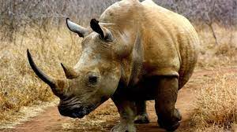 | 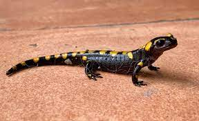 | 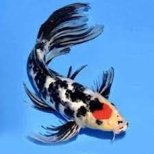 | 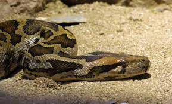 | 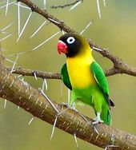 |
| rinoseronte | salamandra común | pez koi | piton | loro |
| Rhinocerotidae | Salamandra | Cyprinus rubrofuscus | Python molurus | Psittacoidea |
| 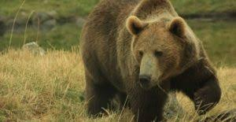 | 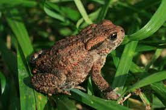 | 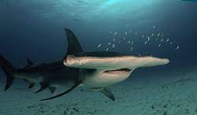 |  |
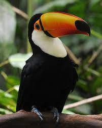 |
| oso pardo | sapo europeo | tiburon martillo | iguana marina | tucan |
| Ursus arctos | Sapo Común Europeo Bufo bufo | Sphyrna mokarran | Amblyrhynchus cristatus | Ramphastidae |
 |
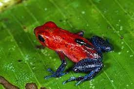 | 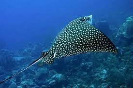 | 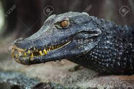 | 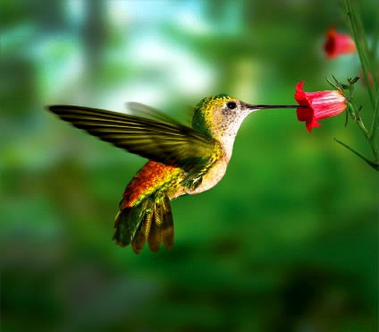 |
| oso panda | rana flecha rojiza | mantarraya | caiman de cuvier | colibri |
| Ailuropoda melanoleuca | Salamandra | nombre cientifico | nombre cientifico | nombre cientifico |
| 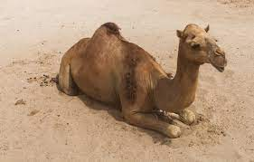 | 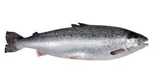 | 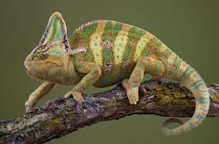 | 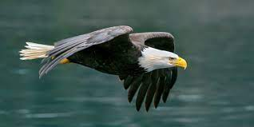 | |
| camello | rana toro | salmon | camaleon comun | aguila real |
| Camelus | Lithobates catesbeianus | Salmo | Chamaeleo chamaeleon | Aquila chrysaetos |
 |
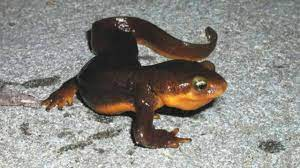 | 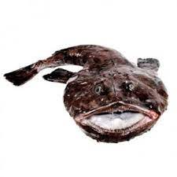 | 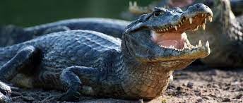 | 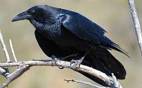 |
| pantera negra | ajolote | rape | caiman yacare | cuervo |
| Panthera pardus | Salamandra | nombre cientifico | Triturus | Corvus corax |
Integrantes del equipo
Javier Francisco Magaña Gonzalez
Leonardo Salvador Benitez Ruiz
Luis Aldair Isai Aragon Flores
Brian Enrique Koyoc Catzin